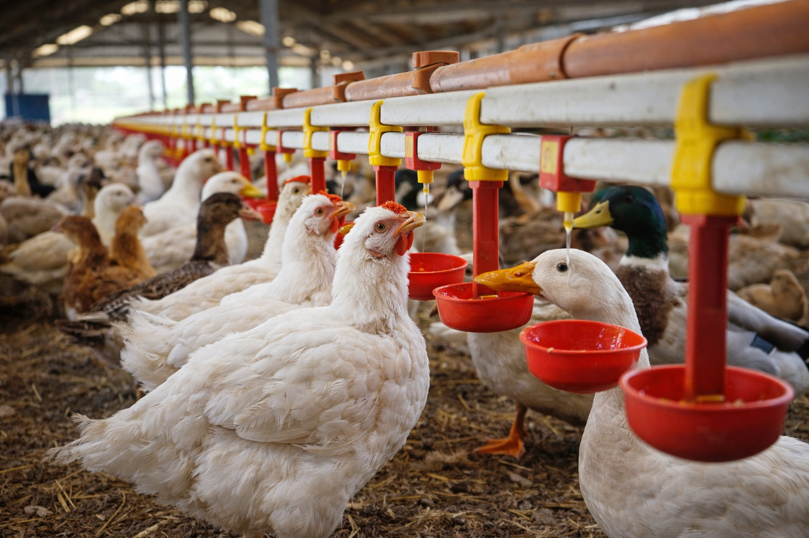

Introduction
Feed and nutrition form the backbone of poultry farming, directly influencing growth, egg production, and disease resistance. A balanced diet ensures proper development and improves overall farm productivity.

Poultry birds (chickens and ducks) feeding on balanced diet
Objectives of Proper Nutrition
Proper nutrition helps in achieving healthy growth, improving egg production, maintaining body weight, and strengthening immunity. It also reduces feed wastage and ensures better economic returns.
Nutritional Requirements
| Nutrient | Function | Sources | Deficiency Effect |
|---|---|---|---|
| Proteins | Growth and repair | Soybean, fish meal | Poor growth |
| Carbohydrates | Energy source | Maize, wheat | Low energy |
| Vitamins | Immunity | Vegetables | Weak immunity |
| Minerals | Bone strength | Calcium | Weak bones |
| Water | Digestion | Clean water | Dehydration |

Feed ingredients like maize and grains
Feed Composition
Typical Poultry Feed Composition
Feeding Stages
| Stage | Age | Feed Type | Purpose |
|---|---|---|---|
| Starter | 0–6 Weeks | High protein | Growth |
| Grower | 6–20 Weeks | Balanced feed | Development |
| Layer | 20+ Weeks | Calcium rich | Egg production |

Different poultry birds including chickens and ducks
Feeding Process
Proper feeding and clean water system
Common Feeding Problems
Conclusion
Balanced feeding is essential for maximizing poultry productivity. Proper nutrition improves growth, egg quality, and disease resistance, ensuring better farm performance.

Healthy poultry producing quality eggs